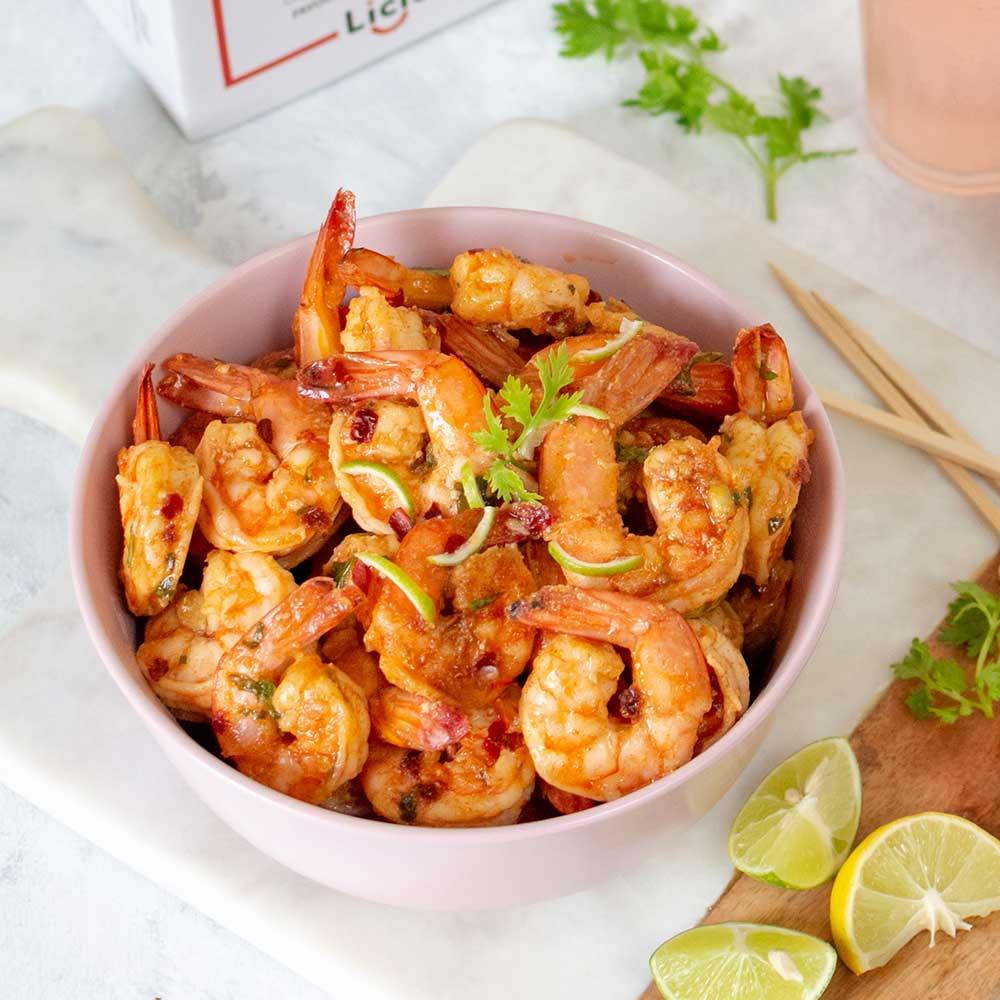

Chilli Prawns

Ingredients
Brining(optional)
- 11/2 tbsp sugar
- 1/2tsp salt
- 1 cup water
For marination
- 1/4tsp pepper
- 1 tbsp corn flour
- t tbsp plain flour
For Sauce
- 1 1/2 tbsps oil for frying pawns
- 1 tbsp olive or sesame oil for sauce
- 1/2cup capsicum cubed or bell pepper
- 1/4cup Spring onions
- 1 tbsp garlic chopped
- 1 to 2 green chilli slit
- 11/2tbsps. Chilli sauce
- 1 to 11/2 tsp soya sauce
- 1 to 11/2tsp vinegar
- 1 tsp chilli powder
- 250 grams deveined prawns about 8 to 12 large
- 1 1/2tsp pepper crushede
- 1/2 tsp sugar
INSTRUCTIONS
Preparation for chilli prawns
- Devein and clean the prawns well. Rinse them under running water
- Add sugar and salt to a bowl. Pour 1 cup of water. Stir well and add the prawns to the liquid
- Set aside for 30 mins, meanwhile proceed with other preparation
- Drain the water completely from the prawns and add corn flour, plain flour and pepper. Mix every thing well sand set aside for 10 mins. This helps the excess moisture from the prawns to be released and make the flour moist
- Heat oil in a pan and fry the pawns on a medium heat. Gently flipping to and fro.Since they are brined the cooking time reduces to half.So they just get done under 3 mins, though it depends on the size of the prawns. The prawns swril and take a C shape when are done. Do not overcook they will turn hard and rubbery.
- By then the flour coated over the prawns turn crisp.Set these aside to a absorbent tissue
How to make chilli prawns
- Clear up the pan and add more oil. Saute garlic until fragrant. Add chillies, capsicum and onion cubes or spring onions. Sprinkle very little salt and sugar.
- Saute on high flame just for one to 2 mins until the bell peppers are half cooked yet retain their crunch.
- Add chilli sauce, chilli paste, soya sauce, vinegar and pepper. You will also need to add 2 tbsps of water.
- Mix and allow the sauces to bubble. Taste this and add more spice or sauce if you like.
- Switch off the stove and add the prawns
- Toss well and add spring onion greens if you have in hand
- Serve chilli prawns immediately to enjoy the crust